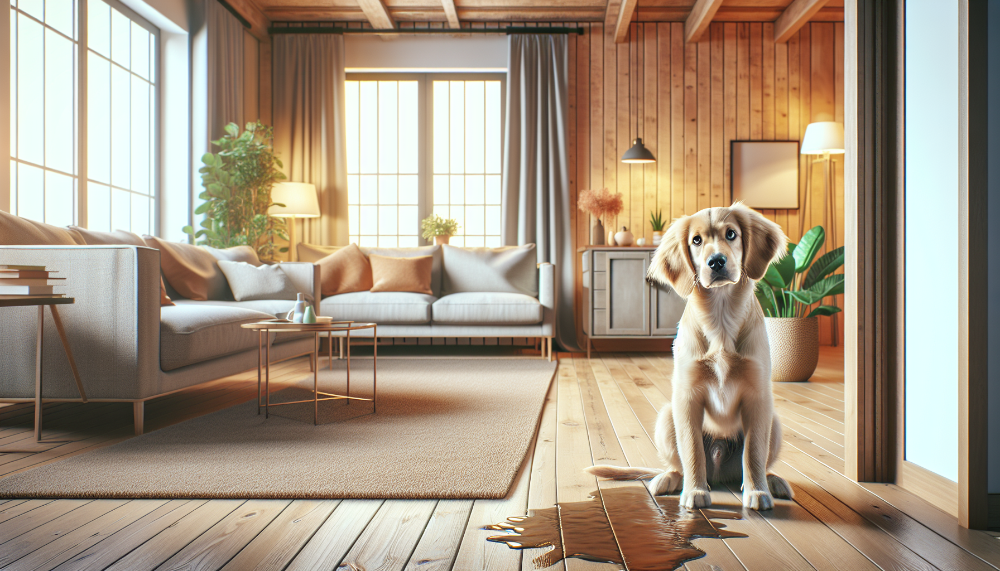

Pet Products & SnoutAndAbout • March 06, 2026

Understanding Dog Marking in the House: Causes, Solutions, and Prevention
As a dog lover, welcoming a furry friend into your home is one of life's greatest joys. However, when your beloved pet begins marking inside the house, it can be both frustrating and confusing. Luckily, with the right approach, you can address this issue effectively.
What is Dog Marking?
Dog marking is a natural behavior where dogs release small amounts of urine in specific spots to mark their territory. Unlike complete urination, marking involves only a small amount. This behavior is most common in male dogs but can also occur in females. Understanding why your dog marks is crucial to finding the right solution.
Common Reasons for Indoor Marking
There are several reasons why your dog might be marking inside the house. Identifying the cause is the first step in managing the behavior:
- Territorial Instincts: Dogs are territorial creatures and may mark to establish ownership of their space, especially if there are changes in their environment.
- Anxiety or Stress: Changes in routine, new pets, or unfamiliar visitors can cause anxiety, leading to marking as a coping mechanism.
- Medical Issues: Sometimes, medical conditions such as urinary tract infections can cause marking. A vet check-up is advisable if you suspect this might be the case.
- Attention-Seeking: Dogs may mark to gain attention from their owners, particularly if they feel neglected.
How to Stop Your Dog from Marking Indoors
Once you've identified the reason behind your dog's marking behavior, you can take steps to curb it:
- Consistent Training: Reinforce good behavior with positive reinforcement. Reward your dog for urinating outside and gently correct them when they mark indoors.
- Spaying or Neutering: This can reduce territorial marking significantly, especially in males.
- Reduce Anxiety: Create a safe and secure environment for your dog. Use calming aids if necessary and maintain a consistent routine.
- Proper Cleaning: Use enzymatic cleaners to remove all traces of urine scent, as leftover odors can encourage repeat marking.
Prevention Tips for a Mark-Free Home
Preventing marking is often easier than addressing it after it starts. Here are some tips to keep your home mark-free:
- Supervision and Confinement: Keep an eye on your dog, especially when they are in new environments. Use baby gates or crates when you can't supervise them.
- Behavioral Training: Engage in regular training to establish and reinforce boundaries. Use commands like 'sit' and 'stay' to control your dog's movement within the house.
- Socialization: Slowly introduce your dog to new people, animals, and environments to reduce anxiety and territorial behavior.
When to Seek Professional Help
If your dog's marking persists despite your best efforts, it might be time to consult a professional dog trainer or behaviorist. They can provide tailored advice and techniques to address specific behavioral challenges.
Conclusion: Embrace a Mark-Free Home
Addressing dog marking requires patience, understanding, and consistency. By identifying the cause and implementing effective strategies, you can enjoy a harmonious home with your furry friend. Remember, every dog is unique, and what works for one may not work for another. Persistence is key.
For those looking to add a touch of personalization and style to their pet's life, explore our range of customized pet products. Shop personalized pet products at SnoutAndAbout on Etsy.